|
artima.com
principles-wiki.net
github.com
|
Principles of Programming and Software design |
|
lostechies.com
wikipedia.org
wikipedia.org
wikipedia.org
wikipedia.org
|
SOLID,
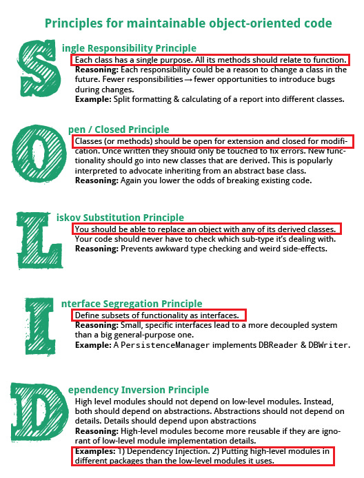
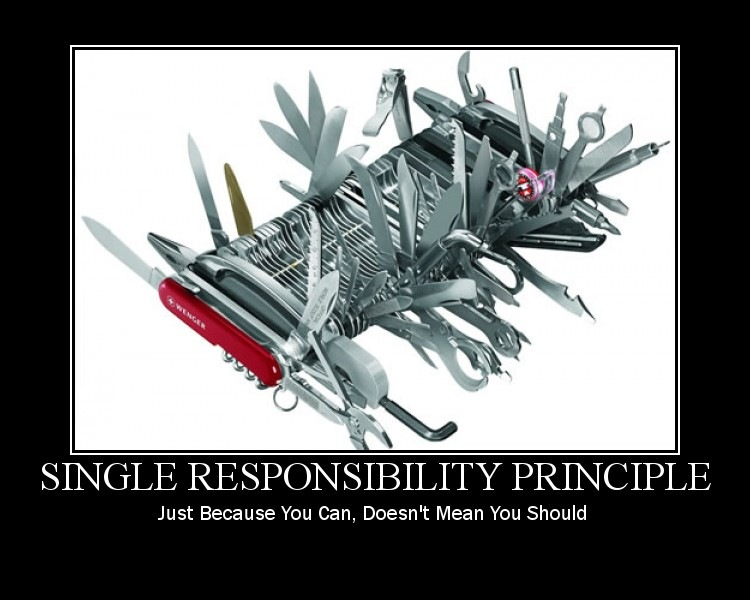
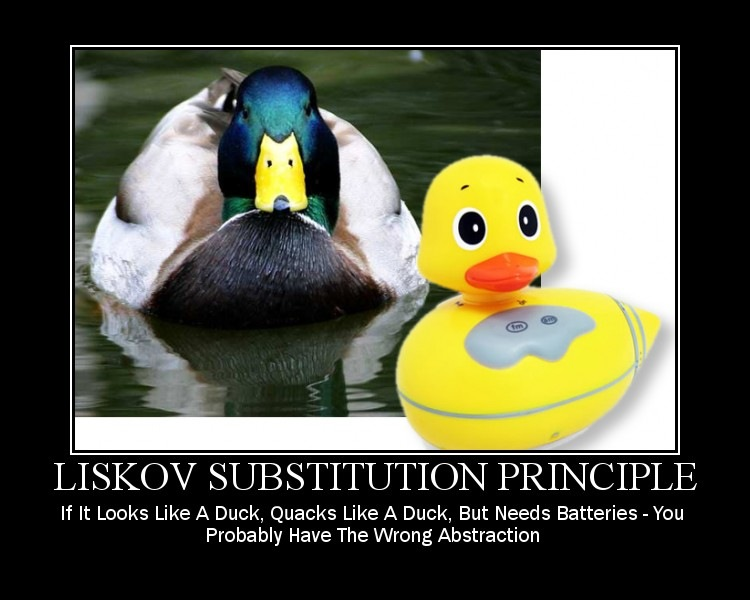
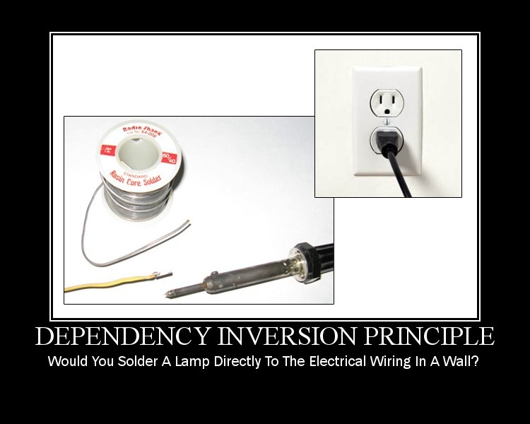
YAGNI, KISS, DRY
|
|
swskilltree.org
github.com
|
Catalogue of design patterns |
|
wikipedia.org
wikipedia.org
|
List of software Architecture Styles and patterns
|
|
c2.com
stackoverflow.com
|
GangOfFour design patterns 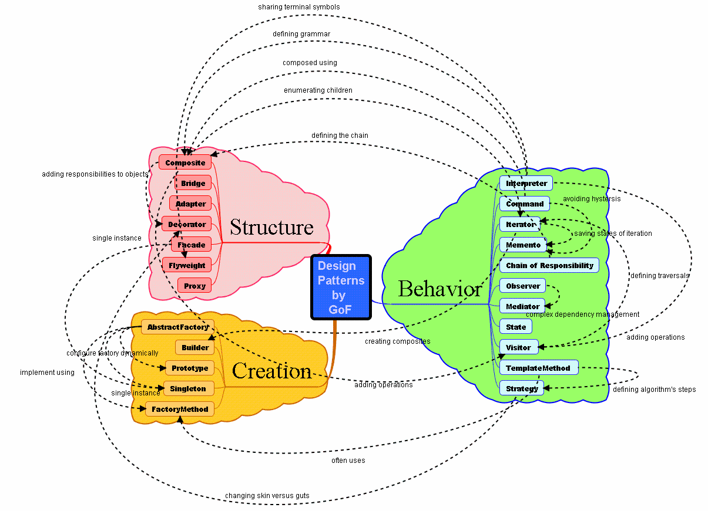
Examples of GoF design patterns in Java classes
Creational (CategoryCreationalPatterns)
Structural (CategoryStructuralPatterns)
Behavioral (CategoryBehavioralPatterns)
|
| theartofscalability.com |
The Importance of Scalability:
|
|
infoq.com
hpts.ws
|
Scalability Best Practices: Lessons from eBay |
| slideshare.net |
Facebook architecture for 600M users |
| scaledagileframework.com |
Non Functional Requirements (NFR) |
| javapractices.com |
"The JavaBeans pattern has serious disadvantages" - Joshua Bloch |
|
infoq.com
microservices.io
martinfowler.com
arungupta.me
arungupta.me
|
Microservices Architecture and its benefit over Monolith Applications
: it addresses,
Single Responsibility Principle
Explicitly Published Interface
Independently Deploy, Upgrade, Scale, Replace
Potentially Heterogeneous/Polyglot
Light-weight Communication
Related patterns,
|
|
martinfowler.com
github.com
|
Serverless Architecture. Backend as a Service (BAAS) & Functions as a Service (FAAS)
|
| 12factor.net |
The Twelve-Factor is a methodology for building SAS apps
- Codebase: One codebase tracked in revision control, many deploys
- Dependencies: Explicitly declare and isolate dependencies
- Config: Store config in the environment
- Baking services: Explicitly declare and isolate dependencies
- Build, release, run: Strictly separate build and run stages
- Processes: Execute the app as one or more stateless processes
- Port binding:Export services via port binding
- Concurrency: Scale out via the process model
- Disposability: Maximize robustness with fast startup and graceful shutdown
- Dev/prod parity: Keep development, staging, and production as similar as possible
- Logs: Treat logs as event streams
- Admin processes: One codebase tracked in revision control, many deploys
|
| wikipedia.org |
Software Engineering Best Practices for Reliability, Efficiency, Performance and Security
- Application architecture best practices
- Coding best practices
- Complexity of algorithms
- Compliance with Object-Oriented and structured programming best practices
- Component or pattern re-use ratio
- Modules should be Loosely Coupled (fanout, intermediaries)
- Error & exception handling (for all layers – user interface, logic & data)
- Multi-layer design compliance
- Avoid patterns that will lead to unexpected behaviors
- Compliance with SQL programming best practices
- Security best practices
- System functions access, access control to programs
- Input Validation, SQL Injection, Cross-Site Scripting
- Manages transaction level data integrity and consistency
- Appropriate interactions with expensive and/or remote resources
- Data access performance and data management
- Memory, network and disk space management
- Enforce homogeneous naming conventions as per technology stack recommendation
- Avoidance of Dependency Hell like situations during build and setup
|
| reactivemanifesto.org |
Reactive menifesto (RREM) 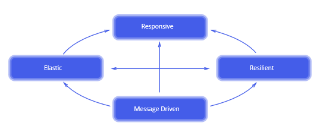
- Responsive
- Resilient
- Elastic
- Message Driven
|
|
c2.com
c2.com
c2.com
c2.com
|
Software Engineering philosophy
- Conceptual Integrity
- Egoless Programming
- Only Say Things That Can Be Heard
- Amorphous Blob Of Human Insensitivity
|
| wikipedia.org |
ACID is a set of properties of database transactions
- Atomicity
- Consistency
- Isolation
- Durability
|
| wikipedia.org |
Uniform access principle (UAP)
Bertrand Meyer formulated the Uniform Access Principle that states:
"All services offered by a module should be available through a uniform notation,
which does not betray whether they are implemented through storage or through computation."
In Scala, caller of fred.age doesn’t know whether age is implemented through a field or a method
|
| acm.org |
Why Domain Specific Language required |
| github.com |
A curated list of code katas |
| e-zest.net |
Java Monitor Pattern for Multi-Thread application
Useful to implement more than one Mutexes in your code
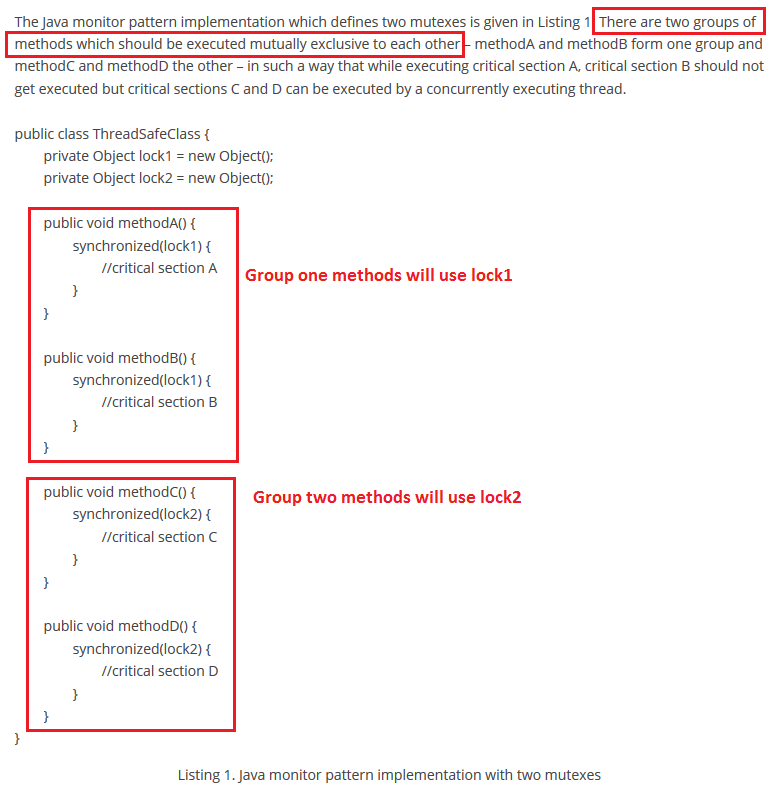
|
|
stackoverflow.com
github.com
|
"Enforce the Singleton Property With a Private Constructor or an Enumerator" - Joshua Bloch |
| javapractices.com |
"The JavaBeans pattern has serious disadvantages" - Joshua Bloch |
| informit.com |
"Prefer primitives to boxed primitives and watch out for unintentional autoboxing" - Joshua Bloch |
|
blogspot.com
blogspot.com
|
The Telescoping Constructor Anti-Pattern. Fix it with Builder Pattern |
|
stackoverflow.com
stackoverflow.com
blogspot.com
|
Inheritance/Composition/Aggregation 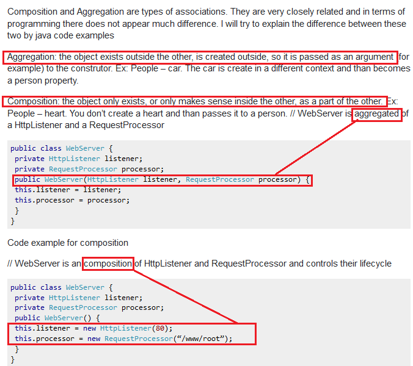
- Composition stresses on mutual existence
- Aggregation does not require mutual existence
|
| stackoverflow.com |
Lexical/Static and Dynamic/Public scoping 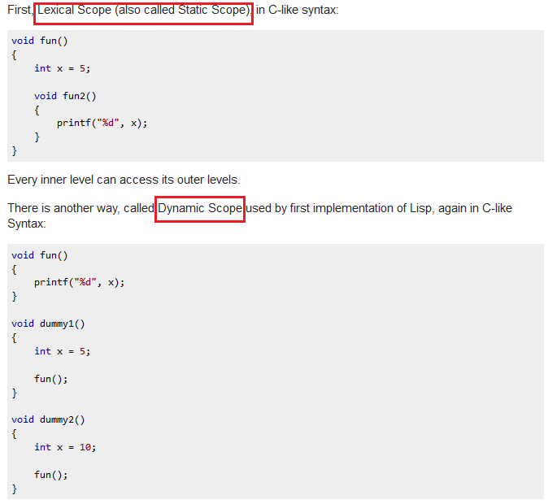 |
| stackoverflow.com |
Statically typed and Dynamically typed languages 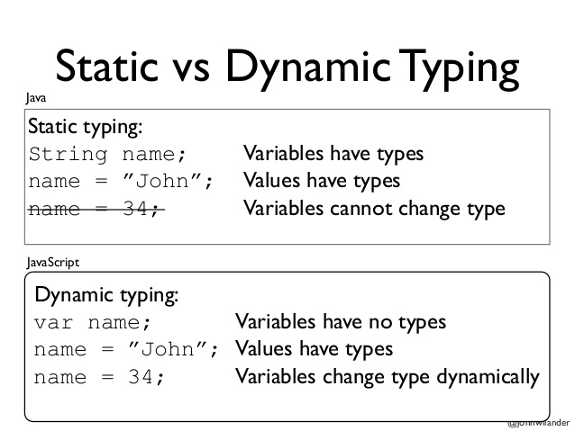 |
|
stackexchange.com
haskell.org
|
Concurrency vs. Parallelism
Asynchronous vs. Synchronous
Non-blocking vs. Blocking
Deadlock vs. Starvation vs. Live-lock
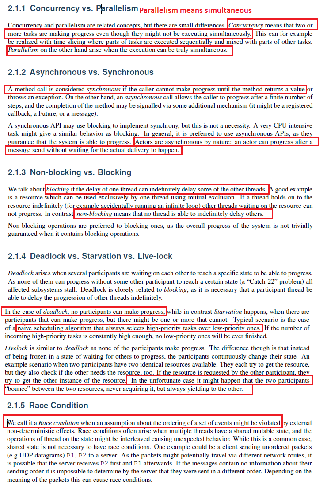
|
|
leguen.ca
blogspot.com
|
Data Mapper Pattern
Data Mapper Pattern vs Active Record Pattern
|
| wikipedia.org |
External sorting relates to class of sorting algorithms that can handle massive amounts of data |
| liquibase.org |
Source control for data base |
| wordpress.org |
Kimball and Inmon Data Warehouse Models |
| c2.com |
Denormalization Is Ok |
|
martinfowler.com
github.com
|
Command Query Responsibility Segregation (CQRS) Design pattern and Axon framework  |
| ezinearticles.com |
OLTP: Systems which serve transactions with suppliers, partners and customers, as well as internal
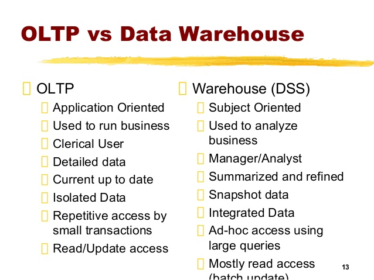
DSS : System which helps in understanding current state and taking facts based informed decisions
|
| microsoft.com |
Comparison of the Top Four Enterprise-Architecture Methodologies |
| github.com |
How to design large-scale systems |
| stackoverflow.com |
Difference between Fine and Coarse grained records |
| gktoday.in |
Difference in Green Field Projects and Brownfield Projects |
| reactive-streams.org |
Reactive Streams |